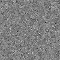

Submission
Submission deadline: 08.06.20 23:55h
Please ensure that all files you created also contain your name and your IDM ID and also your partner's name and IDM ID if you're not working alone.
Each exercise has 10 points. You have to achieve 30 of 60 points in six homework exercises to pass the module.
Quanitfying Errors
3 Points
In Exercise03, we have seen that we can use linear low-pass filters, like the Gauss filter, to reduce the amount of noise in images. Let's test that!
Add two static methods to the Image class:
public static float meanSquaredError(Image a, Image b);
public static float psnr(Image a, Image b, float maxValue); // maxValue is 255 for PNG images
$$ \mathrm{MSE}_{ab}= \frac{1}{M} \sum _{i=0}^{M} \left(a_i - b_i\right)^2 $$
$$ \mathrm{PSNR_{ab}} = 20\cdot \log_{10}(\mathtt{maxPossibleValue}) - 10\cdot \log_{10}(\mathrm{MSE}_{ab}) $$
Static also means that you will use them like float mse = Image.meanSquaredError(imageA, imageB);.
Open a test image and add some noise using addNoise in exercise.Exercise05 (src/main/java/exercise/Exercise05).
(new ij.ImageJ()).exitWhenQuitting(true);
Image original = lme.DisplayUtils.openImageFromInternet("https://mt2-erlangen.github.io/shepp_logan.png", ".png");
original.setName("Original");
Image noise = new Image(original.width(), original.height(), "Noise");
noise.addNoise(0.f, 10.f);
Image noisyImage = original.minus(noise); // You might also implement your own `plus` ;-)
Apply a Gauss filter (choose a good filterSize and sigma) on the noise image and compare the result with the original image.
Can the error be reduced in comparision to the unfiltered noisy image? Also take a look on the error images that you can
calculate using your minus method of the class Image.
- Hint: You can use a for-loop to try out different values for
sigma. - Hint: You do not need to submit written answers to the questions in the text. Just do the correponding experiments!
Non-Linear Filters
3 Points
A quality criterion for medical images are sharp edges. However, though the Gauss filter reduces the noise it also blurs out those edges. In this exercise, we try to mitigate that problem using non-linear filters.
Non-linear filters calculate similar to a convolution each pixel value in the output from a neighborhood of the input image. Remember the sliding window from exercise 3? Non-linear filters do exactly the same.

Source: https://github.com/vdumoulin/conv_arithmetic
Create a class mt.NonLinearFilter in the file src/main/java/mt/NonLinearFilter.java:
// Your name here <your idm>
// Your team partner here <partner's idm>
package mt;
import lme.WeightingFunction2d;
import lme.NeighborhoodReductionFunction;
public class NonLinearFilter implements ImageFilter {
// Name of the filter
protected String name;
// Size of the neighborhood, 3 would mean a 3x3 neighborhood
protected int filterSize;
// Calculates a weight for each neighbor
protected WeightingFunction2d weightingFunction = (centerValue,neighborValue,x,y) -> 1.f;
// Calculates output value from neighbors and weights
protected lme.NeighborhoodReductionFunction reductionFunction;
public NonLinearFilter(String name, int filterSize) {
this.filterSize = filterSize;
this.name = name;
}
@Override
public String name() {
return name;
}
}
As you can see, NonLinearFilter uses two interfaces. You can copy them into your src/main/java/lme/ folder.
// in file `src/main/java/lme/WeightingFunction2d.java`
package lme;
@FunctionalInterface // Does nothing. But Eclipse is happier when it's there.
public interface WeightingFunction2d {
// Assigns a neighbor (shiftX, shiftY) a weight depending on its value and the value of the pixel in the middle of the neighborhood
float getWeight(float centerValue, float neighborValue, int shiftX, int shiftY);
}
and
// in file `src/main/java/lme/NeighborhoodReductionFunction.java`
package lme;
@FunctionalInterface
public interface NeighborhoodReductionFunction {
// Calculates the output pixels from the values of the neighborhood pixels and their weight
float reduce(float[] values, float[] weights);
}
Implement the method apply for NonLinearFilter.
@Override
public void apply(Image input, Image result)
The method should calculate each output pixel from a neighborhood. So
- Create an array to hold the values of the neighborhood pixels. How many neighborhood pixels are there?
- Loop over each output pixel
- Fill the array of neighborhood pixels with values from the input image (needs two inner loops)
- Use
this.reductionFunction.reduceto determine the value of the output pixel. You can usenullfor the second parameter for now (we will implementweightslater). - Save the value to the output image (using
setAtIndex).
Overall, the method should look very similar to your LinearImageFilter.apply method.
To test your method, implement a MedianFilter in a file src/main/mt/MedianFilter.java as a subclass of NonLinearFilter.
// Your name here
// Team partner's name here
package mt;
import java.util.Arrays;
public class MedianFilter extends NonLinearFilter {
public MedianFilter(int filterSize) {
// TODO:
super(...);
reductionFunction = ...;
}
}
The MedianFilter is a LinearImageFilter with
reductionFunction (values, weights) -> { Arrays.sort(values); return values[values.length / 2]; }
(it sorts the values and takes the one in the middle).
All you need to do is to call the super constructor and set reductionFunction.
Does the median filter also reduce the noise in the image?
Bilateral Filter
2 Points
Next, we will implement the BilateralFilter.
package mt;
public class BilateralFilter extends NonLinearFilter {
GaussFilter2d gaussFilter;
public BilateralFilter(int filterSize, float spatialSigma, float valueSigma){
...
}
}
The bilateral assign a weight to each neightborhood pixel.
So modify your NonLinearFilter.apply method that it also creates a weights array and uses weightingFunction.getWeight to
fill it. reductionFunction should now also be called with the weights array.
The bilateral has to parameters $\sigma_{\text{value}}$ and $\sigma_{\text{spatial}}$.
For large values of $\sigma_{\text{spatial}}$ the bilateral filter behaves like a Gauss filter.
Initialize gaussFilter in the constructor. Set weightingFunction so that the weights $w_s$ of the Gauss filter are returned.
Set reductionFunction. It should multiply each of the values with its weight and then sum the results up.
Your BilateralFilter should now behave like a Gauss filter. Does it pass the test in GaussFilter2dTests when you
use BilateralFilter instead of GaussFilter2d?
Edge-Preserving Filtering
2 Points
To make our bilateral filter edge preserving, we have to use also $\sigma_{\text{value}}$. The value weight $w_v$ is calculated as follows
$$ w_v = \exp\left(-\frac{\left(\mathtt{centerValue}-\mathtt{value}\right)^2}{2 \sigma_{\text{value}}^2}\right) $$
Just multiply with this value $w_v$ in weightingFunction. The total weight of a pixel will then be $w_v \cdot w_s$.
Now we have the problem that our weights will no longer add up to one! To solve this problem divide by the sum of weights
in the reductionFunction.
Can you reduce the error even more using the bilateral filter? My results look like this.
 |
|||
|---|---|---|---|
| Original | Noisy | Gauss filtered | Bilateral filtered |
 |
 |
 | |
| Error Unfiltered | Error Gauss | Error Bilateral |
{kind=link}
{kind=link}
{kind=link}
{kind=link}